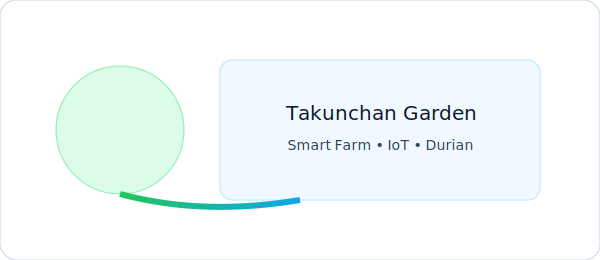

สวน + IoT
ยินดีต้อนรับสู่ สวนทุเรียนอัจฉริยะ
ผสานแนวทางเกษตรธรรมชาติ กับเทคโนโลยีควบคุมอัตโนมัติ ESP32, ระบบวัดความชื้น และแดชบอร์ดแบบเรียลไทม์

จุดเด่นของเรา
รดน้ำอัตโนมัติ
ควบคุมด้วย ESP32 และรีเลย์
ตั้งโหมด Auto/Manual ได้
ข้อมูลแบบเรียลไทม์
บันทึกและแสดงผลความชื้น
Mock Dashboard ในหน้านี้
พลังงานยั่งยืน
รองรับโซลาร์เซลล์/แบตเตอรี่
บริหารพลังงานอย่างมีประสิทธิภาพ
สรุปสถานะสวน (จำลอง)
รายละเอียดระบบความชื้นในดิน
-- %
ปั๊ม ON
ประกาศ
นี่คือข้อมูลจำลองเพื่อสาธิต UI — เมื่อต้องการเชื่อมต่อข้อมูลจริง สามารถปรับ
script.js ให้ fetch จาก ThingSpeak / Firebase / API ของคุณ